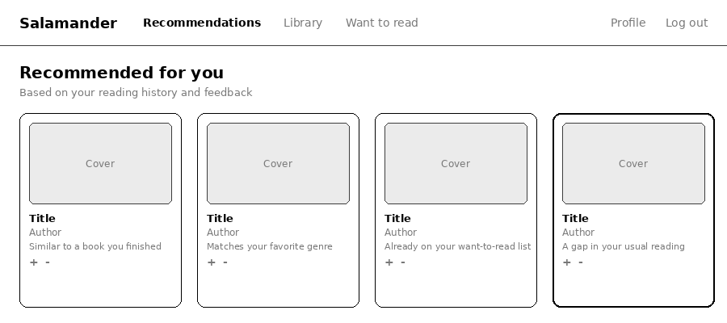
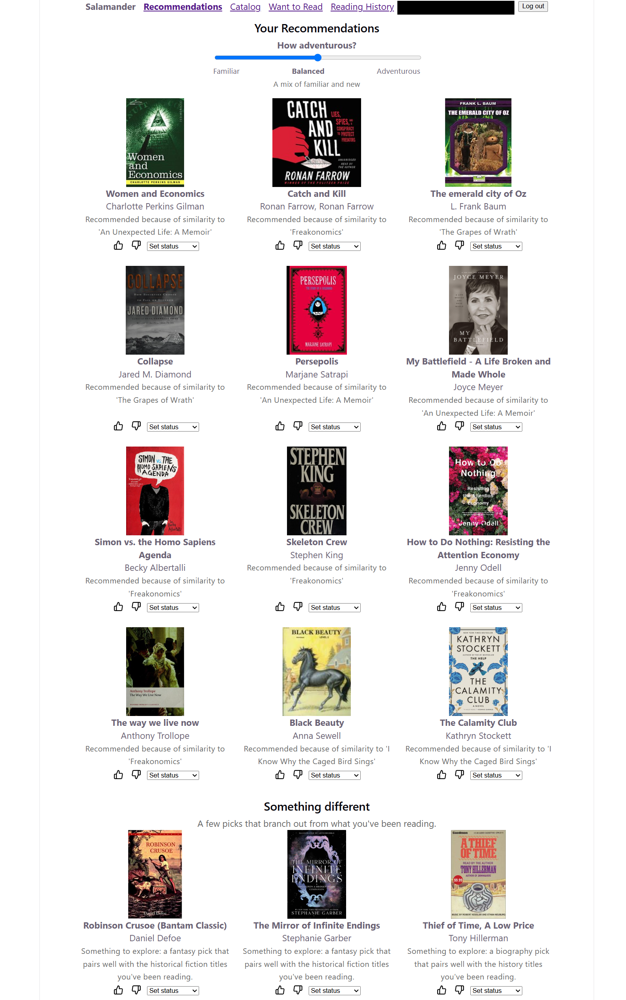

The goal
When I wrote my last entry, Salamander was in its infancy — a dual-centroid design on paper, a chosen stack, and no working prototype. I promised weekly build milestones and an evaluation harness built alongside the recommender, and I hoped October wouldn't become a rushed catch-up month. So the goal this month was to grow it up: get the core logic implemented, not just designed. Would the recommender, the diversity auditor, and a searchable catalog actually hold together on real books? They do — the core logic is in place, and Milestone 6 is complete.
Fig. 1 — Where the roadmap stands as of October 25.
What I built
The recommender got its feedback loop (Milestone 4). Votes and reading status now feed a weighting table for the recommendation centroid, with caching that invalidates on every vote or status change. Downvoted books are filtered out of future suggestions at a 0.40 cosine threshold I tuned against real similarity scores — and I documented the one gap I know about: the all-downvote fallback works, but an all-upvote profile slips past it.
The diversity side became visible (Milestone 5). Diversity suggestions, reading visualizations, a reading-history dashboard, and a Want to Read list all landed. The exploration control mattered most for the research question: re-ranking raised measured list diversity from 0.668 to 0.786.
Then — the wireframe from my design document

Now — the running app, with my email redacted

Fig. 2 — Same page, then and now. The wireframe promised book cards with reasons; the app adds real covers, a "How adventurous?" slider, vote and reading-status controls on every book, and a separate "Something different" section for diversity picks.
The catalog became searchable and self-healing (Milestone 6). Multi-genre filtering matches any selected genre and ranks books by how many they match — in testing, 177 books carried either of two genres and 13 carried both, which ranked first. When a search finds nothing locally, the app checks external sources and, only if the reader confirms, ingests that single book through the same pipeline: metadata, cleaning, embedding. Nothing is added without a click.
Fig. 3 — Two numbers I can point to on a hard day. Diversity bars are drawn to scale; catalog bars are illustrative.
Under all of it sits a bigger catalog — roughly 70 books grown past 700 by a discovery script pulling from Open Library and the NYT Bestsellers API. I also finished the three deferred research tasks (collaborative filtering, hybrid blending, and the evaluation harness), so the strategy comparison my advisor suggested now runs — on simulated readers, which is why I'm treating those results as preliminary.
Retrospective
What went right: the architecture from last month
survived contact with real code — the two centroids did their two
jobs — and the weekly milestone rhythm I promised actually worked.
Every cleanup script also runs as a dry run first and never
writes without an explicit --apply, so messy data got
fixed without new damage. My advisor liked the Want to Read demo
and called it a good project to put online.
What went wrong: some deferred tasks were marked complete in my roadmap with no code behind them — I only caught it while writing the thesis. And catalog data kept fighting back: duplicate editions, "Last, First" author names, bad genre tags, and an accent mismatch (Inés vs Ines) that nearly let a duplicate through. Paperwork also trailed the code.
How I'll improve: verify a task against the running code before I mark it done, write each findings-log entry the day I find the issue, and fix accent-insensitive matching before it becomes Milestone 7's problem.
Ready for the next phase?
Mostly. With the core logic implemented — the recommender, the diversity auditor, and a catalog that can grow on demand — Salamander has gone from infancy to a working foundation. What's left is two-sided: making it pretty and making it do more. Right now it's functional wireframes; the next milestones bring a real visual identity, starting with a light and dark theme, alongside new functionality like yearly reading goals and on-demand "why would I like this?" explanations. Deployment (my advisor suggested Railway for the API and Vercel for the front end) and the thesis draft run in parallel.
Given my web design background, that styling pass is one I'm looking forward to. Does the dual-centroid idea still feel as clean once it looks the part and the extras pile on? That's what I want to find out next — and no caffeine-induced haze required.